Free Printable Coloring Pages
Pick a page, print it for free and color! Bible verse pages with a brand-new surprise theme, cozy Christmas scenes and the story of baby Jesus. Perfect for Sunday school, homeschool, church groups and quiet time at home.
“I have hidden your word in my heart, that I might not sin against you.”Psalm 119:11 (WEB)
Love · Strength · Light · Trust · Joy · Nature · Faith · Sweet Friends · Promises · Noah's Ark · Garden · Home · Christmas · Nativity
Bible Verse Coloring Book for Girls
Love
Strength
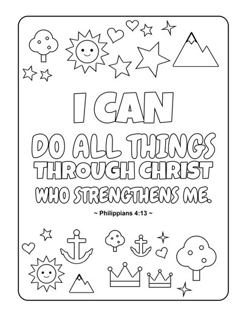
Philippians 4:13“I can do all things through Christ who strengthens me.”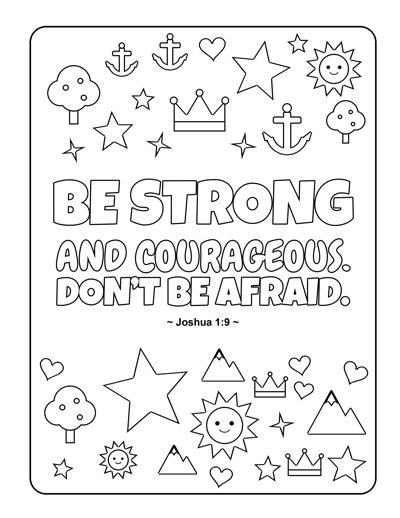
Joshua 1:9“Be strong and courageous. Don’t be afraid.”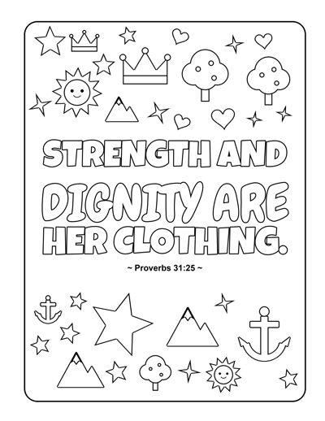
Proverbs 31:25“Strength and dignity are her clothing.”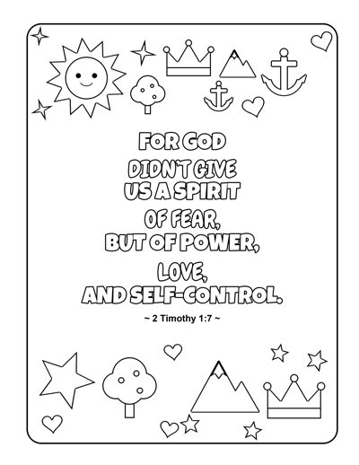
2 Timothy 1:7“For God didn’t give us a spirit of fear, but of power, love, and self-control.”Light
Trust
Joy
Nature
Faith
Sweet Friends
Promises
Noah's Ark
Garden
Home
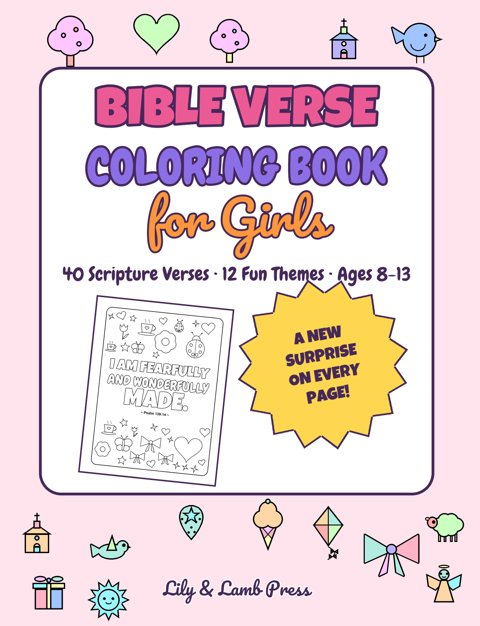
Love this page? Get the whole book
40 Bible verses, each with its own surprise theme to color. A real printed book (paperback, 8.5 x 11 in, 88 pages), shipped by Amazon. Not a digital download.
Christmas Joy Coloring Book
Christmas
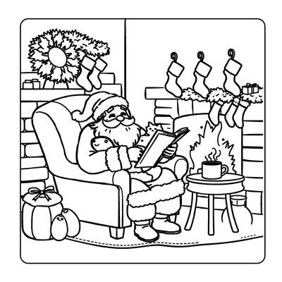
Santa Reading His Wish List by the Fire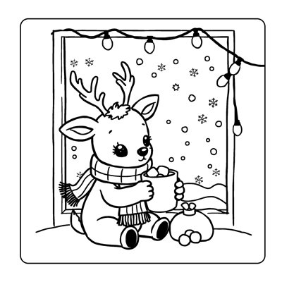
Baby Reindeer Sipping Hot Cocoa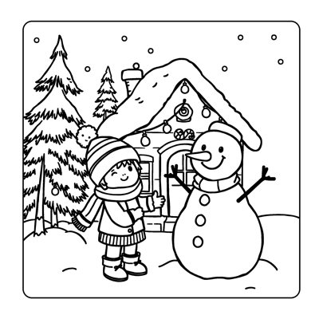
Kids Building a Snowman Santa Decorating Gingerbread Cookies
Santa Decorating Gingerbread Cookies Christmas Tree with a Sleeping Puppy
Christmas Tree with a Sleeping Puppy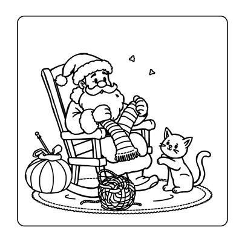
Santa Knitting a Cozy Scarf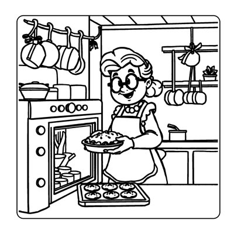
Mrs. Claus Baking a Christmas Pie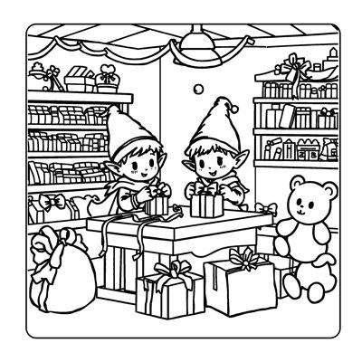
Elves Wrapping Presents in Santa's Workshop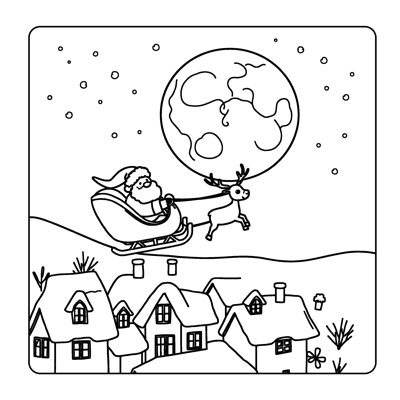
Santa's Sleigh over the Rooftops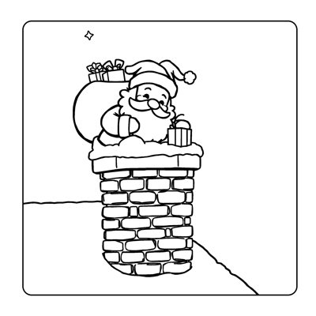
Santa Going Down the Chimney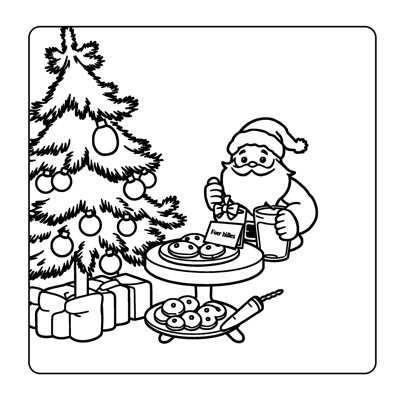
Milk and Cookies for SantaWriting a Letter to SantaPenguins Ice SkatingPolar Bear Cub with Hot CocoaGingerbread HouseSnowman FamilyFox and Bunny Decorating a Christmas TreeKids Sledding Down the HillCozy Christmas WindowPuppy in a Gift BoxKitten Playing with Christmas LightsSanta Resting After ChristmasChristmas CarolersChristmas Dinner TableOwls in Winter ScarvesElf Checking the Nice ListDancing Gingerbread MenChristmas Morning PresentsSanta and Reindeer Sharing CookiesSnowy Christmas VillageNativity
 Shepherds Watching Their Flock“There were shepherds in the same country staying in the field, and keeping watch by night over their flock.”
Shepherds Watching Their Flock“There were shepherds in the same country staying in the field, and keeping watch by night over their flock.” The Angel Appears to the Shepherds“I bring you good news of great joy which will be to all the people.”Choir of Angels: Glory to God“Glory to God in the highest, on earth peace, good will toward men.”The Shepherds Visit Baby Jesus“They came with haste and found both Mary and Joseph, and the baby was lying in the feeding trough.”The Star of Bethlehem“we saw his star in the east, and have come to worship him.”The Wise Men Follow the Star“When they saw the star, they rejoiced with exceedingly great joy.”The Wise Men's Gifts for Jesus“they fell down and worshiped him.”Animals Around the Manger“laid him in a feeding trough”Setting Up the Nativity at Home“For there is born to you today, in David’s city, a Savior, who is Christ the Lord.”
The Angel Appears to the Shepherds“I bring you good news of great joy which will be to all the people.”Choir of Angels: Glory to God“Glory to God in the highest, on earth peace, good will toward men.”The Shepherds Visit Baby Jesus“They came with haste and found both Mary and Joseph, and the baby was lying in the feeding trough.”The Star of Bethlehem“we saw his star in the east, and have come to worship him.”The Wise Men Follow the Star“When they saw the star, they rejoiced with exceedingly great joy.”The Wise Men's Gifts for Jesus“they fell down and worshiped him.”Animals Around the Manger“laid him in a feeding trough”Setting Up the Nativity at Home“For there is born to you today, in David’s city, a Savior, who is Christ the Lord.”
Love this page? Get the whole book
45 cozy Christmas scenes and the Nativity story, each on its own page. A real printed book (paperback, 8.5 x 8.5 in, 96 pages), shipped by Amazon. Not a digital download.